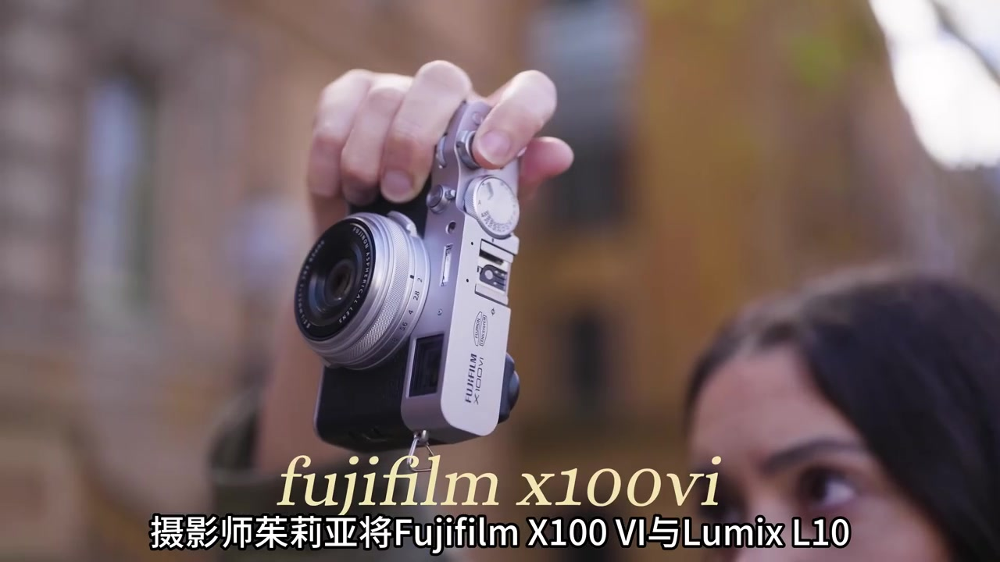
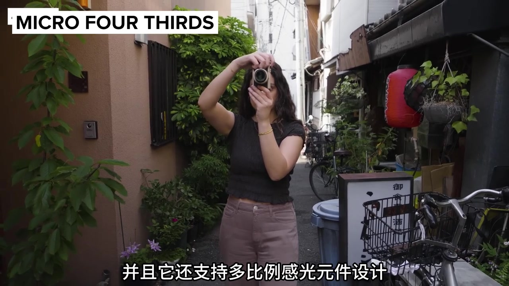
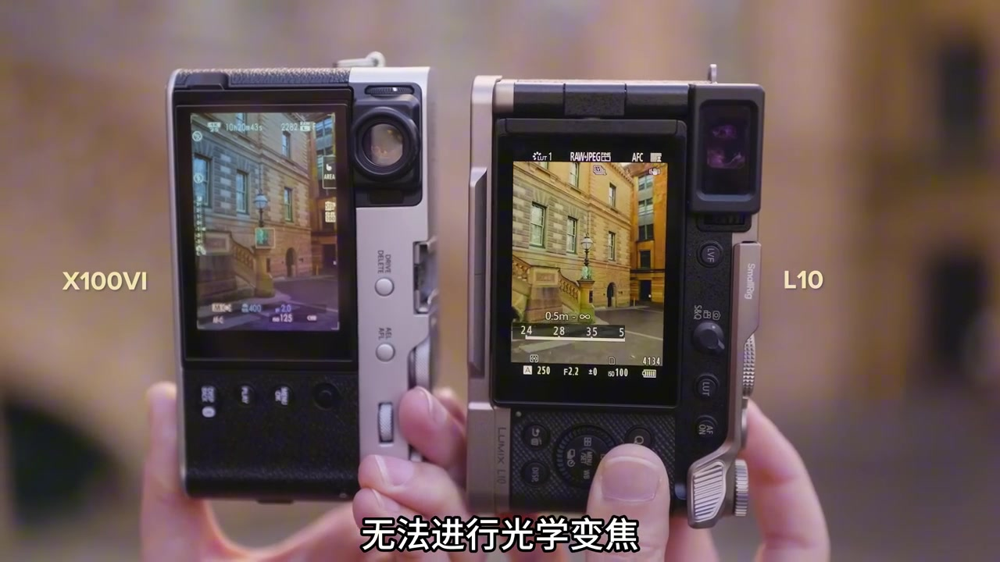
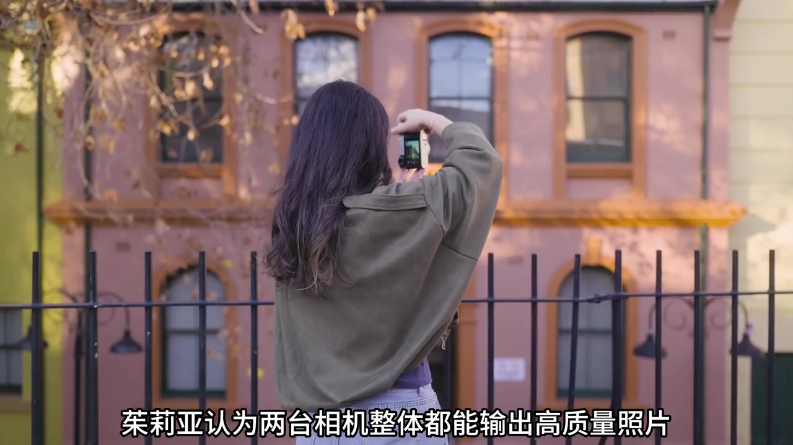
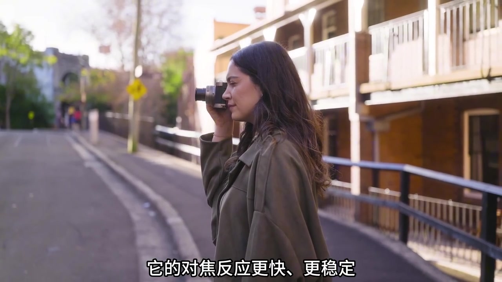
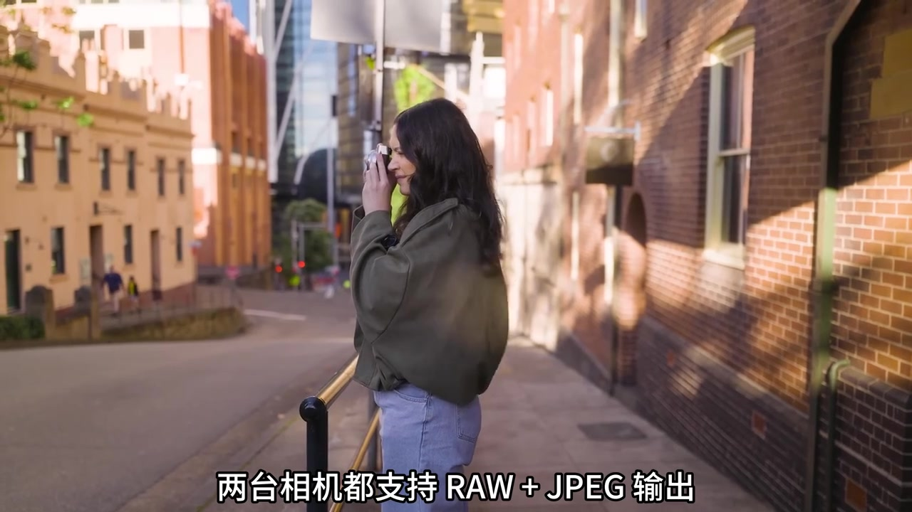
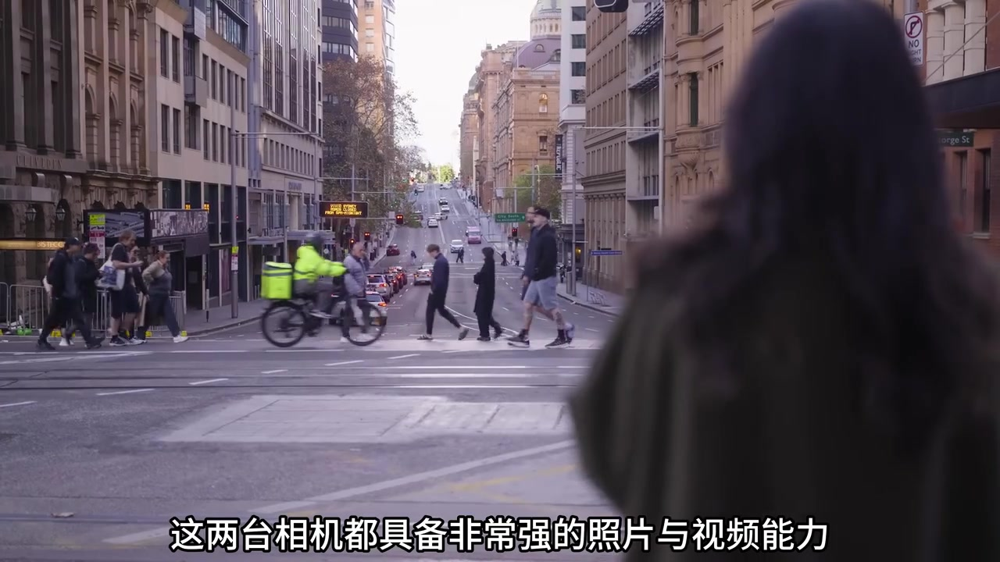

开场：两台定位相近的轻便旅行机
画面先给到手持的银色 Fujifilm X100VI，叠字写明机型。字幕交代：摄影师茱莉亚将把 X100VI 与 Lumix L10 放进同一趟实拍里对比。前者是 APS-C、约四千万像素、等效 35mm f/2 固定定焦；后者是 M4/3、约两千万像素，配莱卡认证等效 24–75mm f/1.7–2.8 变焦头。
画面字幕：「摄影师茱莉亚将Fujifilm X100 VI与Lumix L10」
她说两台都偏轻便日常与旅行，拍摄中会频繁切换，还提前准备了背带方便换机。样片对照页也出现悉尼歌剧院并排：左侧 X100VI @35mm，右侧 L10 @70mm，标注 UNEDITED。
说明：Whisper 将「X100VI／茱莉亚／轻便型／进光量／焦段／变焦拨杆／胶片／ND／IBIS／B-roll／直出」等误识为「X160·X106／朱利亚／轻变形／近光量／焦断／变焦波干／焦片／Andy／IBS／Brow／植树」。下文叙述以可见字幕与机身文字为准；末尾转录仍完整保留原始分段。

画幅、多比例感光与进光量常识
茱莉亚先补一句常识：传感器越大，进光量通常越多，低光更干净、虚化更好、整体画质更高。接着落到 L10——M4/3，并支持多比例感光：可在 4:3、3:2、16:9 间切换且保持相同对角视角。她今天选 4:3，因为更合自己的构图习惯；X100VI 则是更大一档的 APS-C。
画面字幕侧重点：多比例切换、保持对角视角、个人选 4:3

定焦裁切 vs 光学变焦：旅行里怎么选
两台后屏并排对照同一街景：左边标 X100VI，右边机身印着 LUMIX L10，屏幕可见 LUT 1、RAW+JPEG 与 24/28/35/50 焦段刻度。核心差异被说得很直白——富士固定定焦，没有光学变焦；Lumix 可从 24mm 一路到 75mm，任意焦段连续光学变化。
画面字幕：「无法进行光学变焦」
她也补了富士侧的「变通」：四千万像素能用裁切模拟 35／50／甚至约 70mm，机内也有快捷裁切，但本质是数字裁切、文件会变小，没法像 L10 那样平滑光学过渡。她喜欢 L10 的变焦拨杆，比转富士镜头环更少晃机；同时承认定焦限制有创作意义——逼你走位，街拍人像更有意识。旅行场景不可控时，她通常更倾向变焦，好在有限时间抓住构图。高像素还意味着更大文件与备份成本；L10 两千万则更轻便、更适合日常与社交媒体。

样片对照：整体都高，X100VI 略胜一筹
进入实拍样片段落。茱莉亚认为两台都能出高质量照片；若硬要分高下，她觉得 X100VI 整体画质略胜，但并非每张都明显——很多建筑与环境光场景几乎看不出差别。某些人像样片上，富士更锐、背景虚化更平滑自然。
画面字幕：「茱莉亚认为两台相机整体都能输出高质量照片」

对焦：Lumix 更快更稳，富士偶发错焦
自动对焦被她标成 L10 明显更强：反应更快更稳，人物识别几乎常开，远处行人也能识别。富士较弱，人物不够近时可能认不出；连拍人像里 L10 几乎张张准，富士会偶尔错焦，静态也会随机失焦。视频同样——蓝调时刻切换人物时，富士会丢焦，L10 更稳。快门方面两边都是叶片快门；她报出机械／电子上限（口述数值，转录有误识），接着转入色彩。
画面字幕：「它的对焦反应更快、更稳定」

色彩：胶片模拟清单 vs 可导入实时 LUT
室内口述段落开始。富士以胶片模拟著称；Lumix 提供实时 LUT。两边都能 RAW+JPEG：JPEG 会在拍摄时套上色彩风格。富士是固定预设列表，可用胶片配方微调，但基础框架不能完全自定义；L10 能导入自定义 LUT，还可叠加，色彩组合更自由。她强调：这次实拍没有用任何胶片模拟或实时 LUT，为了展示最原始的直出效果。
画面字幕：「富士以胶片模拟著称」

握持、屏幕、按键、闪光灯与续航
重量接近：富士约 521g，L10 约 508g。实际握持上 L10 握把更明显、更舒服；富士握把小，需要小指辅助。机身尺寸差不多，L10 略厚。屏幕：富士翻转屏，L10 侧翻屏——街拍她更偏翻转屏，视频／多角度则侧翻更合适；因两台都不是严格 vlog 机，她个人更喜欢富士翻转屏。取景器：富士混合取景（EVF／OVF），L10 是 OLED EVF。
按键上 L10 自定义键更多，还有照片／视频／S&Q 拨杆切换更快；富士靠菜单或组合键进视频相对慢，但物理快门速度与 ISO 拨盘更「摄影传统」，并有摇杆挪焦点。富士内置闪光灯是加分；L10 需热靴外接。续航差距很醒目：整次拍摄富士换了三块电池，L10 只用一块——她推测与高像素、IBIS 及系统功耗有关。
画面字幕：「在整个拍摄过程中」
视频规格、防抖与最终取向
视频段：X100VI 最高约 6.2K30 或 4K60，内置四档 ND，适合旅行轻装，但 ND 可能带轻微蓝色偏色需后期；L10 最高约 5.8K60／5.7K30，且 4K30 与 120fps 均为无裁切，灵活性更强。防抖：富士机身 IBIS，L10 光学防抖——静态或轻移都尚可，边走边拍都不算稳，富士略好；L10 画面更广，Vlog 构图容错更高。B-roll 上富士靠 IBIS 更易稳，L10 要更多技巧，但自然微晃有时更真实。
收尾：两台照片与视频都很强，真实环境都能出高质量作品，但核心取向不同——富士偏高像素画质、定焦创作与胶片风格；Lumix 偏变焦灵活、操作效率、视频能力与后期色彩自由度。最终看你更看重创作风格，还是拍摄便利与多功能。
画面字幕：「在真实拍摄环境中都能输出高质量作品」
